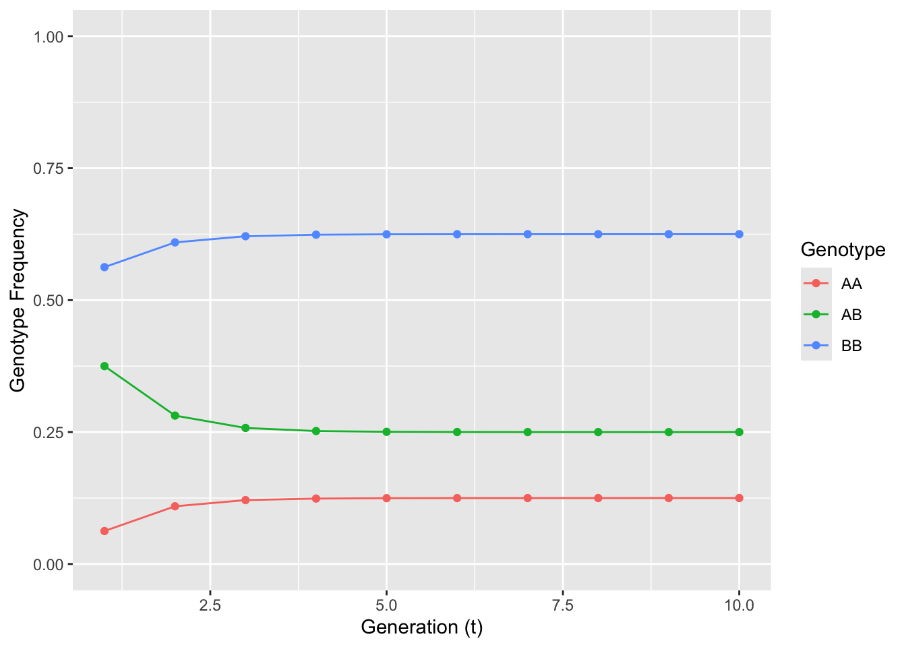
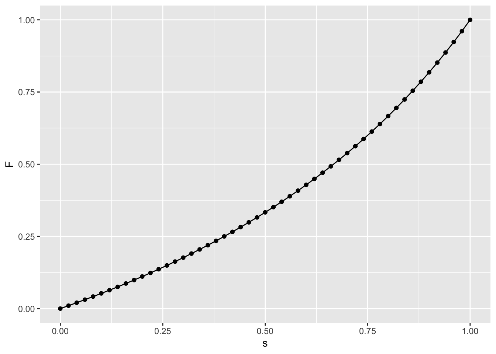

p <- fAA <- fAB <- fBB <- rep(NA,10)
p[1] <- 0.25
fAA[1] <- p[1]^2
fAB[1] <- 2*p[1]*(1-p[1])
fBB[1] <- (1-p[1])^212 Mixed Mating Systems

Not all species that can produce selfed offspring produce only selfed offspring. In many systems, organisms may produce offspring that are a mix of inbred and outcross matings, a condition mixed mating systems. Using the same approach, we can define expectations for allele frequencies (a cinch since they do not change), genotype frequencies (by mixing selfing and regular HWE expectations), and the evolution of the inbreeding parameter \(F\).
To quantify the effects of mixed mating systems, we need to define a new parameter, s, as the selfing rate. This parameter determines the fraction of offspring due to selfing, with \(s=0\) meaning all offspring are outcross, \(s=1\) meaning they are all selfed, and intermediate values indicating a mix of both selfed and outcrossed offspring.
Given the selfing parameter, \(s\), we can easily define the expectations for genotype frequencies at the next generation by adding the expectations for the purely selfed individuals (\(s\)) and the non-selfed individuals (\(1-s\)) as shown in the table below.
In the next generation, the expected frequency of \(AA\) offspring would be:
[ E[AA]_{t+1} = sP_t + s + (1-s)P_t^2 + (1-s)P_tQ_t + (1-s) ]
which simplifies down to:
[ E[AA]_{t+1} = s+ (1-s)p_t^2 ]
In a similar fashion, the heterozygote is:
[ E[AB]_{t+1} = s + (1-s)2p_tq_t ]
and the other homozygote reduces to:
[ E[BB]_{t+1} = s+ (1-s)q_t^2 ]
With these expectations, we can estimate the change in genotype frequencies through time for both allele and genotype frequencies.
This produces the output of these frequency vectors as:
cbind(p,fAA,fAB,fBB) p fAA fAB fBB
[1,] 0.25 0.0625 0.375 0.5625
[2,] NA NA NA NA
[3,] NA NA NA NA
[4,] NA NA NA NA
[5,] NA NA NA NA
[6,] NA NA NA NA
[7,] NA NA NA NA
[8,] NA NA NA NA
[9,] NA NA NA NA
[10,] NA NA NA NAThen iterate through generations 2-10 (or as long as we need to go so that we can see the pattern) as:
s <- 0.5
for(i in 2:10){
fAA[i] <- s*(fAA[i-1] + fAB[i-1]/4) + (1-s)*p[i-1]^2
fAB[i] <- s*fAB[i-1]/2 + (1-s)*2*p[i-1]*(1-p[i-1])
fBB[i] <- s*(fBB[i-1] + fAB[i-1]/4) + (1-s)*(1-p[i-1])^2
p[i] <- fAA[i] + fAB[i]/2
}library(ggplot2)
df <- data.frame( F=c(fAA,fAB,fBB), T=rep( 1:10, times=3), Genotype=rep(c("AA","AB","BB"), each=length(fAA)))
ggplot(df,aes(x=T,y=F,color=Genotype)) + geom_line() + geom_point() + xlab("Generation (t)") + ylab("Genotype Frequency") + ylim(0,1)
The resulting frequencies look to come to equilibrium at a reasonable speed. The frequency of heterozygotes decreases from what would be expected under HWE yet does not go to zero. The fraction of offspring that are the result of outcross matings (\(1-s\)) replenish heterozygotes preventing their entire loss. After a few generations in this simple model, we see that the genotype frequencies can come into equilibrium.
Here is an interactive widget you can play with to see how initial allele frequency and selfing rate interact in shaping genotype frequencies.
knitr::include_app("http://popgen.bio.vcu.edu/shiny/apg/mixed_mating/", height="750")It would be possible to ‘cheat’ a little on those estimations as \(fBB[i] = 1-(fAA[i]+fAB[i])\) in the code above but I think that is one way to cover up potentially problematic bugs in your code. All code has bugs—do not delude yourself into thinking otherwise. One way we can have some confidence in the code we write that we know the frequencies of the three genotypes should sum to unity.
fAA + fAB + fBB [1] 1 1 1 1 1 1 1 1 1 1Another way is to give the code parameters where we know what the outcome should be. For example, if \(s=0\), we should see any distribution of genotype frequencies tend towards Hardy-Weinberg Equilibrium. In fact, it should tend very quickly towards HWE, right?
In a fashion similar to selfing, we can use real data as well to examine genotype frequency change. The gstudio library has a function mixed_mating() that allows you to specify the selfing rate s. I’ll let you play with that one on your own time.
12.1 Mixed Mating Genotype Frequency Equilibriums
In mixed mating systems, there is an intermediate equilibrium frequency for each genotype frequency created by the opposing forces of HWE in the (\(1-s\)) fraction of the offspring that tend towards p2, 2pq, and q2 and the tendency of pure selfing (\(s\)) to remove half the heterozygotes each generation.
There are two equilibriums states that are possible:
- When we have fixed allele frequencies (e.g., \(p=1.0\)). OK, this is kind of a boring example, but it is an equilibrium (as long as there is no mutation).
- The one we are interested in where \(Q_t = Q_{t+1}\). We can solve for this one by setting them equal in the expectation equation and solving for \(\hat{Q}\). The part after the fourth line is just making it more simplified.
]
If this is a calculation that is necessary to use several times, it is easy to wrap it into a function as:
equilbrium.Q <- function(p,s){
q <- 1-p
return(((1 - s) * 4 * p * q)/(2 - s))
}and then you will be able to use it as necessary.
equilbrium.Q(0.5,1)[1] 0equilbrium.Q(0.5,0)[1] 0.5equilbrium.Q(0.25,0.25)[1] 0.3214286The same approach can be used to estimate expected genotype frequencies for the homozygotes, setting for example \(P_{t+1} = P_t\)
[ \[\begin{aligned} \hat{P} & = s(\hat{P}+\frac{Q}{4}) + (1-s)p^2 \\ \hat{P} & = s\hat{P} + \frac{1}{4}sQ + (1-s)p^2\\ \hat{P} - s\hat{P} & = \frac{1}{4}sQ + (1-s)p^2 \\ \hat{P}(1-s) & = \frac{1}{4}sQ + (1-s)p^2 \end{aligned}\]]
then solving for \(\hat{P}\) (or \(\hat{R}\) as necessary) gives the equilibrium genotype frequency
[ \[\begin{aligned} \hat{P} & = \frac{s\frac{Q}{4}}{(1-s)} + p^2\\ \hat{P} & = \frac{\frac{1}{4}s\frac{(1-s)4pq}{2-s}}{(1-s)} + p^2\\ \hat{P} & = \frac{spq}{2-s} + p^2 \end{aligned}\]]
Since the genotype frequencies tend towards an equilibrium, then the inbreeding parameter, \(F\), will also tend towards its corresponding equilibrium, \(\hat{f}\). The value of this equilibrium can be found by substituting the expected heterozygote frequency
[ = ]
into the inbreeding equation and putting it in place of \(H_O\).
[ F = 1 - ]
and simplifying in a few steps we get
[ = ]
The rage at which \(F\) goes from 0 to \(\hat{F}\) can be estimated much like the derivation provided for changes in allele frequencies due to mutation.
It is
[ F_t = + ^tF_0 ]
depending upon only the selfing rate, the starting inbreeding level, and the current generation.
Here is a little gadget to play with that allows you to manipulate \(F_0\), \(s\) and the number of generations (\(T\)).
knitr::include_app("http://popgen.bio.vcu.edu/shiny/apg/selfing_F/", height="850")12.2 Estimating Selfing Rates
As with most things in population genetics, these expectations provide nice descriptions of what we expect to see in the wild, but at the end of the day we are stuck with a bunch of raw genotypes and the need to find an estimation of \(s\). In fact, it is usually the value of \(s\) that we are most interested in seeking, not the value of \(F\). It is possible though, to rearrange the equilibrium expectation of \(\hat{F}\), solving for s and thereby providing a first approximation for population-level selfing rates (or at least the equivalent selfing rate given a bunch of other expectations).
[ = ]
In some cases, this approximation would make sense—cases such as a study of plants where selfing is a potential outcome of mating (e.g., Schemske & Lande 1985)—but may be somewhat meaningless (in a direct sense) to species whose mating system does not allow selfing (e.g., most non-plant species). That said, the estimate \(\hat{s}\) is an idealized parameter and because it is based solely upon inbreeding, \(F\), it is an integrative parameter incorporating mating patterns not just during a single round of mating but as an accumulation across many mating events as well as other forms of non-random mating such as consanguinity.
df <- data.frame( s=seq(0,1,by=0.02))
df$F <- df$s/(2-df$s)
ggplot( df, aes(x=s,y=F) ) + geom_line() + geom_point()